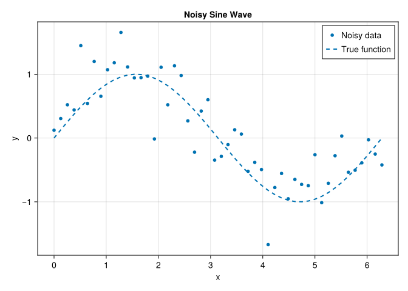

Welcome to CEVE 421/521! This lab will guide you through setting up the software tools we’ll use throughout the semester. By the end of this lab, you’ll have a working Julia environment and will create your first visualization.
2 Pre-Lab Requirements
Complete these steps before coming to lab. Budget 30-60 minutes for installation. If you get stuck, note where you stopped and we’ll troubleshoot in class.
2.1 Create a GitHub Account
If you don’t already have one, create a free account at github.com. Use your Rice email to get access to additional student benefits.
2.2 Accept the GitHub Classroom Assignment
Go to Canvas and find the Lab 1 assignment
Click the GitHub Classroom link
Accept the assignment to create your personal repository
You’ll get a link to your new repo (e.g., CEVE-421-521/lab-01-S26-yourname)
2.3 Install GitHub Desktop
Download and install GitHub Desktop. This provides a visual interface for Git operations.
Experienced users can use the command line or another Git client, but GitHub Desktop is recommended for this course.
2.4 Clone Your Repository
Open GitHub Desktop
Click “Clone a repository from the Internet”
Find your lab repository under your GitHub account
Important: Choose a local path that is NOT in OneDrive, Google Drive, iCloud, or any synced folder
Recommended: Create a folder like ~/CEVE-421-521/ and clone into it
Your path should be something like ~/CEVE-421-521/lab-01-S26-yourname
Cloud sync services (OneDrive, Google Drive, Dropbox) can corrupt Git repositories. Always store code repositories in a non-synced folder.
2.5 Install Visual Studio Code
Download and install VS Code. Then install the Julia extension:
Open VS Code
Click the Extensions icon in the left sidebar (or press Ctrl+Shift+X / Cmd+Shift+X)
Once approved, install the “GitHub Copilot” extension in VS Code
Sign in with your GitHub account
You are also welcome to explore other AI coding tools such as Claude Code and OpenAI Codex, but these generally have no, or limited, free plans.
2.9 Activate the Julia Environment
Open your cloned lab folder in VS Code. You can do this directly from GitHub desktop.
Open the VS Code terminal (Ctrl+`` or Cmd+``)
Start Julia by typing julia
Activate and instantiate the project:
usingPkgPkg.activate(".")Pkg.instantiate()
This installs all required packages for the lab.
2.10 Verify Your Setup
In VS Code, open the terminal and run:
quarto render index.qmd
This should produce two files:
index.html (web version)
index.pdf (PDF version via Typst)
If both files are created without errors, your setup is complete!
3 In-Class Workflow
Now that your environment is set up, let’s complete the lab exercises.
3.1 Setup
This section loads the tools (called “packages”) we need for this lab.
if !isfile("Manifest.toml")usingPkgPkg.instantiate()end
1
Check if a file called Manifest.toml exists in the current folder. This file tracks which package versions are installed.
2
Load Julia’s built-in package manager, called Pkg.
3
Install all packages listed in Project.toml. This only runs if Manifest.toml doesn’t exist yet.
4
end closes the if block. Julia uses if ... end instead of curly braces like some other languages.
We’ll load a popular plotting library
usingCairoMakie
1
Load the CairoMakie package, which we’ll use to create plots. using makes all the functions from that package available.
3.2 Exercises
3.2.1 Exercise 1: Identify Yourself
Fill in your name, NetID, and GitHub username below. In Julia, we store values in variables using the = sign.
name ="James Doss-Gollin"netid ="jd82"github_username ="jdossgollin"
1
Create a variable called name and assign it a string (text in quotes). Replace with your name!
2
Create another variable called netid. Strings can use either double quotes "..." or single quotes '...'.
3
Your GitHub username is what appears in your repository URL (e.g., github.com/jdossgollin).
"jdossgollin"
Now, Quarto will automatically print a greeting using string interpolation:
println("Hello! My name is $name and my NetID is $netid.")
1
println() prints text to the screen. The $ symbol inside a string inserts the value of a variable. This is called string interpolation - Julia replaces $name with the actual value stored in name.
Hello! My name is James Doss-Gollin and my NetID is jd82.
3.2.2 Exercise 2: Generate Data
Let’s create some data to visualize. We’ll generate a noisy sine wave - this simulates real-world data that has measurement error.
x =range(0, 2pi, length=50)noise =0.3*randn(length(x))y_noisy =sin.(x) .+ noisey_true =sin.(x)
1
Create 50 evenly-spaced numbers from 0 to 2π (about 6.28). range() is like making tick marks on a ruler. pi is a built-in constant in Julia.
2
Generate random “noise” values. randn(n) creates n random numbers from a normal distribution (bell curve centered at 0). length(x) returns how many elements are in x (50). Multiplying by 0.3 makes the noise smaller.
3
Calculate noisy y-values. The dot. before sin and + means “apply this operation to each element” - this is called broadcasting. Without the dot, Julia would try to take the sine of the whole array at once (which doesn’t work). So sin.(x) computes sine for all 50 x-values.
4
Calculate the “true” sine values without noise, for comparison.
3.2.3 Exercise 3: Create a Visualization
Now let’s plot the noisy data alongside the true sine function. CairoMakie uses a “grammar of graphics” approach: you build plots layer by layer.
let ... end creates a temporary scope. Variables created inside (like fig and ax) won’t clutter your workspace. This is a good habit for plotting code.
2
Create an empty figure - think of it as a blank canvas to draw on.
3
Add an axis (the plotting area with x/y coordinates) to the figure. fig[1, 1] means “row 1, column 1” of a grid layout. The semicolon ; separates positional arguments from keyword arguments like xlabel=, ylabel=, and title=.
4
Add scattered points. The ! at the end of scatter! is a Julia convention meaning “this function modifies something” (here, it adds to the axis). We pass the axis, x-coordinates, y-coordinates, and styling options.
5
Add a dashed line for the true function. :dash is a symbol - a special Julia type for named options (look up “Julia symbols” for more).
6
Add a legend that automatically uses the label text from each plot layer.
7
Return the figure so it displays. In Julia, the last expression in a block is automatically returned.

Figure 1: Noisy sine wave data with true function overlay
4 Submission
Follow these steps to submit your completed lab:
4.1 Push to GitHub
In GitHub Desktop:
Review your changes in the “Changes” tab
Write a summary (e.g., “Complete Lab 1 exercises”)
Click “Commit to main”
Click “Push origin” to upload to GitHub
4.2 Handle the Formatter PR
After you push, a GitHub Action will check your code formatting. If any changes are needed:
Go to your repository on GitHub
Look for a Pull Request titled “Format Julia code”
If one exists, click “Merge pull request” and confirm
4.3 Pull Changes to Your Computer
After merging the formatter PR (or if there was no PR), you need to sync your local copy:
Open GitHub Desktop
Click “Fetch origin” in the top bar (this checks for remote changes)
If changes are found, click “Pull origin” to download them
Your local files are now up to date with GitHub
Always pull before you start working and after merging any PRs. This keeps your local copy in sync with GitHub.
4.4 Re-render and Submit
After pulling any changes:
quarto render index.qmd
Upload the generated index.pdf file to the Lab 1 assignment on Canvas.